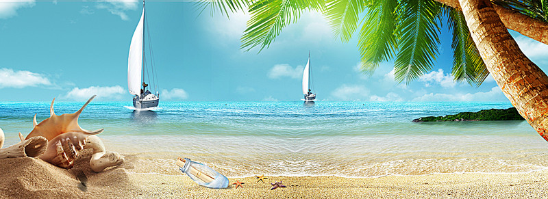

Seashore rentals is OPEN for the season!!! The most waited summer adventures are now available at affordable prices and provide a refreshing blast on the lake on a hot summer day. . No Boater's Certification is needed - you will fill out a Dockside checklist to cover you for the time of your rental. Lifejackets are included. We are located on the main beach in Gimli and Winnipeg Beach just north of the main dock and Lakeview Resort Hotel. We are open 7 days a week as long as the sun is shining and it's not too rough on the water.
According to our many return customers, the best thing about renting from us is that we are always here, the jet skis are on the beach ready to go - there is no personal hassle of owning one, storing it, insuring, repairing etc.. Just the fun.
Types of Equipment we rent :
- At Gimli
- Jet-Ski
- Jet Tubing
- Canoe
- Kayak
- At Winnipeg Beach
- Standup Paddle Board
- Paddle Boats
- Parasailing
- Ferry-rides